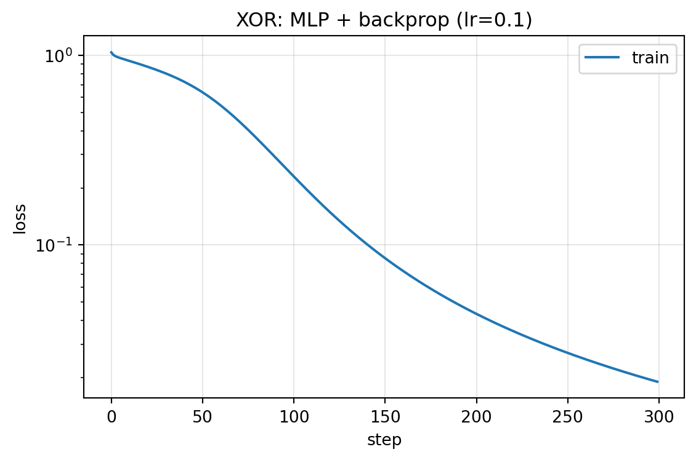
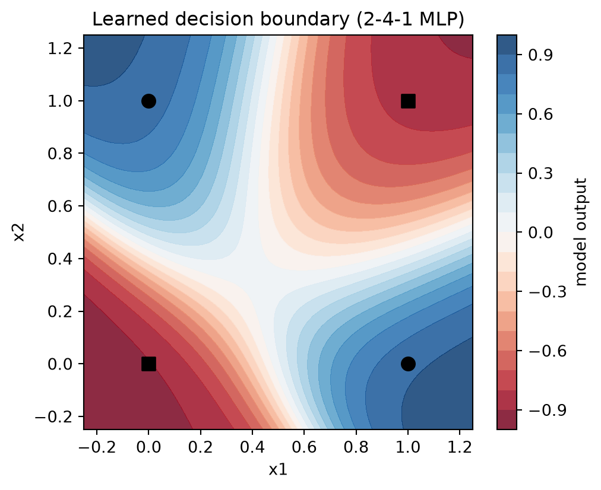
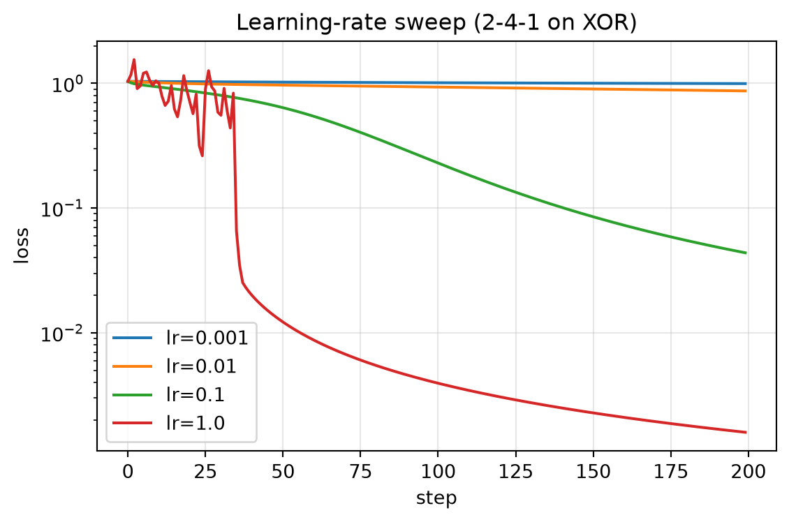

from dlbook.autodiff import MLP, Value, sgd_step, zero_grad
from dlbook.utils import plot_loss_curves, set_seed
set_seed(42)6 反向传播：从思想到发动机
6.1 1986 年的一篇论文
要讲清楚反向传播，得先回到 1986 年，看看当时的人工智能是什么样子。
那一年，AI 的主流是符号主义。教科书里讲的是专家系统，实验室里跑的是 LISP 程序，经费大部分流向了规则与逻辑的方向。神经网络在这个版图上几乎没有什么位置——它在 1969 年被 Minsky 和 Papert 的那本专著 (Minsky and Papert 1969) 批评过之后，已经边缘化了十几年。全世界还在坚持做这件事的人不多，分散在几个实验室里，彼此认识。
David Rumelhart 是其中一位。他不是工程师出身，而是加州大学圣迭戈分校的认知科学家，关心的问题是”人脑是怎么加工信息的”。1980 年前后，他和心理学家 James McClelland 组织了一个松散的研究小组，后来人们叫它 PDP 学派——PDP 是”并行分布式处理”（Parallel Distributed Processing）的缩写，这个名字本身就在申明立场：他们认为智能应该由许多简单单元的并行协作产生，而不是由一条条人工规则堆出来。
小组的成员之一 Geoffrey Hinton 那时还年轻。他后来回忆过当时的处境：整个方向被认为已经过时，他们更像是一群在地下活动的爱好者。1985 年夏天，小组在圣地亚哥办了一次为期两周的工作坊，来自不同学校的人聚在一起，把各自的手稿摊在桌上互相评论。这次工作坊的材料后来结集成书，就是两大卷的《并行分布式处理》 (Rumelhart, McClelland, et al. 1986)，1986 年出版。
就在这本书出版前几个月，1986 年 10 月，Rumelhart、Hinton 和一位研究生 Ronald Williams 在《自然》上发表了一篇四页的论文 (Rumelhart, Hinton, et al. 1986)，题目是”通过反向传播误差来学习表征”。这篇论文讲的方法本身并不长——把输出端的误差逐层往回传，用传回来的误差决定每个权重该怎么改——但它的演示很扎实：一个两层的神经网络，没有人手工设计中间层，自己学出了有用的内部表征。
本章要做的，就是把这四页纸里的方法亲手实现出来。我们会先弄清它要解决的问题，再看它的来历，然后写代码，最后让它在我们已经熟悉的 XOR 问题上工作。在那之前，先把我们自己的位置摆正。
Tip算力需求
A 级：笔记本 CPU · 全部实验合计约 1 分钟。
- 算力：主流研究机型是 VAX-11/780 一类的工作站（约 1 MIPS）；训练几千参数的网络以小时计。今天一台普通笔记本的 CPU 比它快四个数量级以上。
- 数据：以千计的样本就是”大数据集”；图像领域像样的基准还要等十年。
- 认知：多数人相信 Minsky 与 Papert 在 1969 年的论断已经为神经网络结案：感知机只解线性可分问题，而多层网络不存在有效的训练算法。
- 关键事实：链式法则属于 17 世纪；把链式法则组织成高效算法、配上能跑的演示、并通过恰当的渠道传播出去，这三件事凑齐发生在 1986 年。
6.2 本章问题
第 1 章结束时我们留下了一个悬案。感知机的学习规则之所以能工作，靠的是一个很具体的条件：输出单元的正确答案 \(y\) 是已知的。预测错了，误差 \(y - \hat{y}\) 可以直接算出来，更新规则 \(\Delta w = \eta\,(y - \hat{y})\,x\) 便顺理成章。
现在给网络加一层隐藏单元，条件就变了。隐藏单元没有”正确答案”——谁也不会告诉第一个隐藏单元它应该输出什么。它的输出对不对，只能从最终结果的误差里间接推断。这个困难在后来的文献里有了正式的名字，叫信用分配问题（credit assignment）：当最终结果出错时，功劳和过错该怎么在层层叠叠的单元之间分摊？
可以打个比方。一家公司季度亏损了，董事会知道总数，但要决定哪个部门该削减预算、哪个员工该调整方向，就必须把总亏损一层层分解下去：这个部门贡献了多少，那个环节又拖累了多少。感知机是一家只有一个部门的公司，账目一目了然；多层网络是一家有中间管理层级的公司，而 1986 年之前，没有人知道该怎么做这份报表。
数学上其实没有原则性的障碍。一个两层网络配上平方误差，就是一个普通的复合函数，对任何一个权重求偏导，链式法则都给得干干净净。真正的障碍在别处。最直接的办法是对每个参数独立地从头推一遍导数。算一算这个代价：每求一个参数的梯度，都要把整个网络完整地过一遍；参数有一百万个，就要过一百万遍。1986 年的机器跑不动这种算法，2026 年的机器同样跑不动——当参数从十几个变成几千亿个，“每个权重单独推一遍”在任何时代都是死刑。
所以需要的东西不是新的数学，而是一种让中间结果被复用的计算顺序。这正是本章的主角。
6.3 历史中的尝试
6.3.1 从相关性到误差信号
在感知机之前，关于”神经元怎么学习”最流行的想法来自 Hebb。1949 年，这位加拿大心理学家在《行为的组织》一书中提出：如果两个神经元总是一起激活，它们之间的连接就会增强。这个猜想方向是对的——权重确实应该由经验改变——但它有一个后来才看清的缺陷：规则里没有任何”错误”的影子。一起活跃就增强，那么增强到什么时候为止？增强错了怎么办？Hebb 的规则没有刹车。
1960 年，斯坦福的 Bernard Widrow 和他的研究生 Ted Hoff 做出了另一台机器，叫 ADALINE (Widrow and Hoff 1960)。它是一个可以调权重的线性单元，用的元件是真正的硬件——电阻和旋钮。他们为它设计的学习规则不再看相关性，而是看误差：拿期望输出和实际输出之差去驱动权重的调整。他们甚至证明了收敛性质。这条规则已经站到了多层网络的门口，只差一步——但那一步，恰好是它跨不过去的。ADALINE 的误差信号到输出层为止。网络再深一层，误差就传不进去了。
6.3.2 一本书的杀伤力
1969 年，Minsky 和 Papert 出版了《感知机》。这本书用严格的数学分析了单层感知机的能力边界，证明了一大类问题——以奇偶性（XOR 属于这类）为代表——是它原理上学不了的。数学上这本书是对的，而且写得漂亮。问题出在结尾：作者在书末用相当悲观的语气讨论了多层网络的前景，大意是没有理由期待谁能找到多层网络的有效训练方法。
这本书的影响很难被今天的读者体会。它出自 MIT 教授、领域权威之手，出版之后，这个方向的经费和年轻人在几年之内就散了。历史学家后来常引用这件事，作为”权威的悲观比权威的乐观更危险”的例证。公平地说，Minsky 和 Papert 严格证明的是单层的情况，对多层的判断只是书末几页的推测——但读这本书的经费官员和研究生不会去区分哪些是定理、哪些是猜测。
6.3.3 在错误的房间里沉默了十二年
现在把镜头切到 Paul Werbos。1974 年，他在哈佛大学完成博士论文 (Werbos 1974)，方向是预测与控制，不是神经网络——神经网络只是他顺手使用的工具。在论文的一章里，他把链式法则系统地用到了多层网络的训练上：误差如何逐层回传、每层的权重如何由回传的误差决定。后来回头看，这正是反向传播的完整雏形。
但这份工作发表在与预测控制相关的渠道里，读的人很少。Werbos 后来回忆，他当时曾把这套方法讲给不同领域的人听，没有人觉得它重要。一个正确的想法，在一个错误的房间里沉默了。
类似的故事不止一例。芬兰的 Seppo Linnainmaa 在 1970 年的硕士论文 (Linnainmaa 1970) 里研究的是数值计算问题——复合函数求导时舍入误差如何累积——他给出的”反向模式”微分，本质上就是后来反向传播的求导框架。1985 年，MIT 的 David Parker 又独立地得出了同样的结果 (Parker 1985)，写成了技术报告。同一个想法，至少三次各自独立地出现，又各自无声地沉没。
为什么 1986 年就不一样了？对比这些案例，差别不在数学，而在三件事的同时到位：一份马上可以复现的演示（Rumelhart 等人的论文里附了完整的算法和实验）、一个能承载它的硬件环境（工作站刚好够跑小网络）、一个传播的渠道（《自然》加 PDP 两卷本）。想法早就成熟了，1986 年提供的是点燃条件。
现在你是 1985 年的研究者。你已掌握：链式法则、一个 2-3-1 的两层网络（9 个权重）、纸和笔。
任务：求出平方误差对 \(W_1\) 全部 6 个权重的偏导。硬推。推的过程中不断问自己三个问题：
- 哪些量在你的推导里被反复用到？
- 如果权重是 200 万个，你的推导里哪些步骤是重复劳动？
- 能否设计一个计算顺序，让任何中间量只计算一次、存下来复用？
把答案写在纸上再往下读。你刚才做的事叫动态规划；你将要设计的那个顺序，就叫反向传播。
6.4 核心思想
6.4.1 先用手推一遍
在写通用公式之前，先在具体的小网络上走一遍。这个步骤在后来的书里常被省略，但省略它正是”读得累”的来源之一——所以我们不省。
设一个最简单的两层网络：两个输入 \(x_1, x_2\)，一个隐藏单元，一个输出。隐藏单元先算加权和再过一个激活函数（这里用 \(\tanh\)）：
\[h = \tanh(w_1 x_1 + w_2 x_2 + b_1)\]
输出单元直接取 \(h\) 的加权和：
\[\hat{y} = w_3 h + b_2\]
现在给一组具体数字：\(x_1 = 1, x_2 = 0\)，权重全取 0.5，目标 \(y = 1\)。前向算一遍——
- 隐藏层加权和：\(0.5 \times 1 + 0.5 \times 0 + 0.5 = 1.0\)；过 \(\tanh\) 得 \(h \approx 0.762\)；
- 输出：\(\hat{y} = 0.5 \times 0.762 + 0.5 = 0.881\)；
- 误差：\(y - \hat{y} = 0.119\)。
到这里为止都是算术。关键的问题在下一步：\(w_1\) 对 0.119 的误差负多少责任？
沿着 \(w_1\) 影响误差的路径走。\(w_1\) 先影响隐藏层的加权和，加权和影响 \(h\)，\(h\) 影响 \(\hat{y}\)，\(\hat{y}\) 影响误差。按链式法则，把每一小步的”影响率”乘起来：
- \(\hat{y}\) 对 \(h\) 的变化率是 \(w_3 = 0.5\)；
- \(h\) 对加权和的变化率是 \(\tanh'(1.0) = 1 - 0.762^2 \approx 0.42\)；
- 加权和对 \(w_1\) 的变化率是 \(x_1 = 1\)。
三者相乘，再乘上误差对 \(\hat{y}\) 的变化率（平方误差下是 \(2(\hat{y} - y) \approx -0.24\)），就得到 \(w_1\) 的梯度。注意这个乘积里真正属于 \(w_1\) 的只有最后一项 \(x_1\)；前面的两项，是误差”流到”隐藏单元时的强度——网络里每一个要经过隐藏单元的权重，都要用这两项。这就是复用。
如果你做了上面的「停一停」，你手里的中间量就是这些”误差流到某层时的强度”；你设计的计算顺序，就是从输出层开始，一层层往输入方向算，每层把两样东西记下来：这一层该负多少责任，以及这份责任如何继续往上分。
6.4.2 一般化的三条递推
把手推的过程写成一般形式。设一个 \(L\) 层的全连接网络，前向计算为：
\[z_l = W_l a_{l-1} + b_l, \qquad a_l = \sigma(z_l), \qquad a_0 = x, \qquad L = \lVert a_L - y \rVert^2\]
对每一层定义一个记号：\(\delta_l\) 表示第 \(l\) 层的”责任”，也就是损失对这一层加权和的偏导。于是链式法则折叠成三条式子：
\[\delta_L = 2\,(a_L - y) \odot \sigma'(z_L)\]
\[\delta_l = \left(W_{l+1}^{\top} \delta_{l+1}\right) \odot \sigma'(z_l)\]
\[\frac{\partial L}{\partial W_l} = \delta_l\, a_{l-1}^{\top}\]
三条式子各说一件很朴素的事。第一条说，输出层的责任就是”错了多少”，再按本地斜率折算。第二条说，中间层的责任来自下一层：下一层把它的责任按连接权重分摊上来，再乘上本地的斜率——这一条就是 Widrow 和 Hoff 差的那一步，也是整份”公司报表”的核心。第三条说，每个权重收到的梯度等于”分到的责任乘以本地的输入”，也就是 Hebb 规则缺的那两样东西：方向和份额。
最后算一笔复杂度的账，这笔账是反向传播真正的分量所在。前向传播一遍，计算量正比于参数总量；按上面的顺序反向传播一遍，计算量仍然正比于参数总量。也就是说，一次反向传播就能同时得到全部参数的梯度。这与”每个参数单独推一遍”之间的差距，在 1986 年是从几小时到几个月的差距，在今天是从几天到几个世纪的差距。四十年后训练万亿参数的语言模型，核心循环仍然是这三条式子。
缓一缓。 这一节讲了三件事：反向传播的推导不发明新数学，它只是链式法则的一种省算的排列方式；\(\delta_l\) 这个量的含义是”误差流到这一层时的强度”，它是被复用的中间结果；以及，一次反向传播和一次前向传播的计算量同阶，这个性质使它配得上”发动机”这个词。
6.5 从零实现
讲完原理，动手实现。思路沿 Karpathy 的 micrograd：把每个数包成一个 Value 对象，它记住自己是从哪些数、经过什么运算得来的；调用 backward() 时，从最终结果出发，按依赖关系逆序走一遍，把梯度累加到沿途每个对象上。整个实现放在 src/dlbook/autodiff/，大约一百来行，本节只调用、不抄录。建议读完本节后打开源码对照一遍——它比看上去短。
先用一个手算过的例子检查发动机。取二元函数 \(f(x, y) = (xy + \tanh x)\,y\)，在 \((1.7, -0.8)\) 处求两个偏导：
# f(x, y) = (x·y + tanh(x))·y，在 (1.7, -0.8) 处求梯度
x, y = Value(1.7), Value(-0.8)
f = (x * y + x.tanh()) * y
f.backward()
print(f"f = {f.data:.6f} df/dx = {x.grad:.6f} df/dy = {y.grad:.6f}")f = 0.339673 df/dx = 0.539992 df/dy = -1.784591可以拿微积分手算核对这两个数（练习 1 会教你用数值差分自动核对的方法，tests/test_autodiff.py 里有一个现成的裁判）。发动机本身没问题之后，来处理正题。
还记得第 1 章的 XOR 吗。四个点，感知机在有生之年没能分开它们。现在用 MLP 类搭一个 2-4-1 的网络——两个输入，四个隐藏单元，一个输出——标签取 \(\pm 1\)，与 tanh 的输出范围一致。
model = MLP(2, [4, 1]) # 2-4-1：两个输入、4 个隐藏单元、1 个输出
print(f"参数量：{len(model.parameters())}")
xor = [((0.0, 0.0), -1.0), ((0.0, 1.0), 1.0), ((1.0, 0.0), 1.0), ((1.0, 1.0), -1.0)]
def loss_fn(model, data):
return sum((model(list(xs)) - t) ** 2 for xs, t in data) * (1.0 / len(data))参数量：17训练循环还是感知机那四拍：前向、算损失、反向、更新。与第 1 章唯一的区别是多了一行 backward()——而这一行，就是 1969 年到 1986 年之间空着的那一步。
history = {"train": []}
for step in range(300):
loss = loss_fn(model, xor)
zero_grad(model.parameters())
loss.backward() # ← 1986 年的发动机
sgd_step(model.parameters(), lr=0.1)
history["train"].append(loss.data)
print(f"loss: {history['train'][0]:.4f} → {history['train'][-1]:.6f}")loss: 1.0373 → 0.019024从 1.0 出发，三百步后降到 0.019 附近。看曲线的形状：
plot_loss_curves(history, title="XOR: MLP + backprop (lr=0.1)")(<Figure size 576x384 with 1 Axes>,
<Axes: title={'center': 'XOR: MLP + backprop (lr=0.1)'}, xlabel='step', ylabel='loss'>)
再看四个点各自预测成什么样。判对的标准是预测值与目标同号：
for xs, t in xor:
pred = model(list(xs)).data
print(f"输入 {xs} 目标 {t:+.0f} 预测 {pred:+.3f} {'对' if pred * t > 0 else '错'}")输入 (0.0, 0.0) 目标 -1 预测 -0.906 对
输入 (0.0, 1.0) 目标 +1 预测 +0.848 对
输入 (1.0, 0.0) 目标 +1 预测 +0.868 对
输入 (1.0, 1.0) 目标 -1 预测 -0.838 对四个点全部判对。最后把学到的决策边界画出来。做法是在输入平面上密密地取格点，让训练好的网络对每个格点输出一个值，再按值的大小上色。如果边界是一条直线，说明网络没有超过感知机；如果是弯曲的，说明四个隐藏单元真的拼出了非线形的划分。
import matplotlib.pyplot as plt
import numpy as np
n = 60
grid = np.linspace(-0.25, 1.25, n)
xx, yy = np.meshgrid(grid, grid)
zz = np.array(
[[model([float(a), float(b)]).data for a, b in zip(row_x, row_y)]
for row_x, row_y in zip(xx, yy)]
)
fig, ax = plt.subplots(figsize=(5.5, 4.5))
cs = ax.contourf(xx, yy, zz, levels=20, cmap="RdBu", alpha=0.85)
fig.colorbar(cs, ax=ax, label="model output")
for xs, t in xor:
ax.scatter(*xs, c="k", s=70, marker="o" if t > 0 else "s")
ax.set_xlabel("x1")
ax.set_ylabel("x2")
ax.set_title("Learned decision boundary (2-4-1 MLP)")
plt.show()
图上两种颜色各占两个对角区域，边界是一条折起来的曲线。没有人为隐藏单元规定任何职责——四个隐藏单元自己分好了工。Rumelhart 那篇论文标题里的”学习表征”，说的就是这件事：中间层学到的东西不是设计出来的，是训练压出来的。
缓一缓。 本节做了三件事：用一个手算例子验证了实现的正确性；在 XOR 上训练了一个 2-4-1 的网络并看到四个点全部判对；用决策边界图看到隐藏单元自发形成了非线形划分。感知机时代留下的悬案，到这里结案。
6.6 消融实验
实验跑通了，接下来问两个”为什么”。第一个：四个隐藏单元是必需的吗，还是随便几个都行？
下面的函数把训练过程打包，方便换配置重跑。先扫隐藏单元的数量，从 1 到 8，其余设置不变：
def train_xor(n_hidden, steps=400, lr=0.1, seed=42):
set_seed(seed)
m = MLP(2, [n_hidden, 1])
losses = []
for _ in range(steps):
loss = loss_fn(m, xor)
zero_grad(m.parameters())
loss.backward()
sgd_step(m.parameters(), lr)
losses.append(loss.data)
return m, losses
for n_hidden in (1, 2, 3, 4, 8):
_, losses = train_xor(n_hidden)
print(f"隐藏单元 {n_hidden}: 最终 loss = {losses[-1]:.4f}")隐藏单元 1: 最终 loss = 0.7767
隐藏单元 2: 最终 loss = 0.5314
隐藏单元 3: 最终 loss = 0.0107
隐藏单元 4: 最终 loss = 0.0114
隐藏单元 8: 最终 loss = 0.0072典型结果是这样的：1 个隐藏单元卡在 0.8 附近；2 个在多数种子下能学会，但当前这个种子卡在 0.5 附近；3 个、4 个、8 个都能降到 0.01 左右。
1 个的失败有几何解释。单个隐藏单元的输出是 \(\tanh(w^\top x + b)\)，它的正负分界永远是输入平面上的一条直线——第 1 章已经证明 XOR 的四个点不存在直线划分，所以无论怎么训练都分不开。这与梯度下降无关，是表达能力的问题。
2 个隐藏单元的情况更有意思。理论上两个单元、两条直线，围出一个非线性区域，是够用的。但当前种子失败了。换个种子再试：
for seed in (0, 1, 2, 3, 42):
_, losses = train_xor(2, seed=seed)
print(f"seed={seed}: 最终 loss = {losses[-1]:.4f}")seed=0: 最终 loss = 0.0250
seed=1: 最终 loss = 0.0149
seed=2: 最终 loss = 0.0150
seed=3: 最终 loss = 0.0164
seed=42: 最终 loss = 0.5314五个种子里四个收敛到 0.02 附近，一个卡住。也就是说，容量够用不等于一定学得会——梯度下降最终走到哪里，和出发的位置有关。这个现象叫初始化敏感性，在本章只是脚注，到卷二会变成主要角色。
第二个”为什么”问学习率。第 2 章会系统地讨论这个超参数，这里先直观感受一下：固定网络结构，只改步长，扫 0.001 到 1.0 四档。
plot_loss_curves(
{f"lr={lr}": train_xor(4, steps=200, lr=lr)[1] for lr in (0.001, 0.01, 0.1, 1.0)},
title="Learning-rate sweep (2-4-1 on XOR)",
)(<Figure size 576x384 with 1 Axes>,
<Axes: title={'center': 'Learning-rate sweep (2-4-1 on XOR)'}, xlabel='step', ylabel='loss'>)
从图上能读到三档行为：0.001 的曲线几乎水平（步子太小，走不动）；1.0 的曲线在高位震荡后停在坏值（步子太大，越过谷底来回跳）；中间的两档都能收敛，0.1 收得又快又稳。
那再大一点会怎样。把 lr=2.0 单独跑一下：loss 冲到 2 附近后不再动了。注意它不是数值爆炸——大步长把 tanh 直接推进了饱和区，\(\sigma'\) 趋于零，梯度跟着消失，模型躺在一个全错的解上。步子过大的死法常常不是炸，而是哑。
缓一缓。 消融部分做了两件事：扫隐藏单元数，看到 1 个是几何上的必败、2 个是容量够但看运气、3 个起稳定；扫学习率，看到过小走不动、过大震荡或饱和。两个现象——初始化敏感和学习率敏感——在 1990 年代是每个调参者的日常，第 2 章会把它们当作正式的研究对象。
6.7 本章 Loss 账本
| 问题 | 回答 |
|---|---|
| 在优化什么 loss？ | XOR 四点的全批均方误差（1986 论文同款） |
| 数据从哪来？ | 手工构造的 4 个点——“数据”在此还是玩具 |
| 买到了什么能力？ | 非线性决策边界；隐藏层自动学出中间表征——表征学习的第一次胜利 |
| 没买到什么？ | 泛化（4 个点谈不上）；深层可训性（sigmoid 族导数连乘的隐患已埋下）；真实规模数据 |
这张表是全书第一份正式的账本，其中”目标函数”一栏值得多说一句。本章与前一章的感知机有一个容易忽略的差别：感知机时代的学习规则不是在优化任何显式目标，而本章的网络每一步都在降低一个写得出来的函数。从”没有目标的规则”到”有目标的优化”，这个转变在后面的章节里会反复兑现价值。
Value类的六十行 →torch.Tensor.backward()：仍是”建图 → 拓扑排序 → 逆序累加”，差别只在向量化与 GPU。四十年间接口思想未变。- \(\delta\) 递推 → 框架与论文里的 gradient/delta 记号；把它沿时间维展开，就是卷二 RNN 的 BPTT——以及它将继承的梯度消失灾难。
- “求全部梯度与求一个梯度同价” → 为什么千亿参数的预训练在数学上是可行的。
- 标题里的 learning representations → 表征学习 → 预训练 + 微调范式（3.3）→ GPT（6.1）。这本书后半部的书名级概念在本章第一次出现。
Rumelhart, Hinton & Williams (1986) (Rumelhart, Hinton, et al. 1986). Learning representations by back-propagating errors. Nature 323, 533–536.
- 读什么：Fig. 2（两层网络与”家族谱系任务”的实验）；文末关于”学到的内部表征”的讨论——1986 年的作者已经在思考我们今天叫 interpretability 的问题。
- 跳过什么：连续语音吸引子的部分（与主线无关）。
- 历史注：优先权问题后来被反复梳理（Linnainmaa 1970；Werbos 1974；Parker 1985，以及 Schmidhuber 的优先权综述）。读史的意义不在排座次，而在看清一件事：单独的数学不等于可用的技术——配上演示、硬件与传播渠道，思想才能点燃。
6.8 遗留问题
- 万能逼近定理说一个隐藏层足够逼近任何连续函数，那为什么实践中深层常常更好？梯度下降真的总能找到好解吗？（→ 下一章）
- 本章的实验已经两次露出门缝：sigmoid 族激活的导数 \(\le 1\)（tanh 是 \(\le 1\)，sigmoid 是 \(\le 0.25\)），层数一深，\(\delta\) 逐层连乘会发生什么？（→ 2.2 梯度消失）
- 隐藏层学到的”表征”到底是什么？可以迁移给别人用吗？（→ 3.3）
- loss 降到 0 就一定是好模型吗？（→ 下一章：过拟合与第二次寒冬的种子）
6.9 参考文献
Linnainmaa, Seppo. 1970. “The Representation of the Cumulative
Rounding Error of an Algorithm as a Taylor Expansion of the
Local Rounding Errors.” Master’s Thesis (in Finnish),
University of Helsinki.
Minsky, Marvin, and Seymour Papert. 1969. Perceptrons: An
Introduction to Computational Geometry. MIT Press.
Parker, David B. 1985. Learning Logic. nos. TR-47.
Rumelhart, David E., Geoffrey E. Hinton, and Ronald J. Williams. 1986.
“Learning Representations by Back-Propagating Errors.”
Nature 323: 533–36. https://doi.org/10.1038/323533a0.
Rumelhart, David E., James L. McClelland, and the PDP Research Group.
1986. Parallel Distributed Processing: Explorations in the
Microstructure of Cognition. 1 and 2. MIT Press.
Werbos, Paul J. 1974. “Beyond Regression: New Tools for Prediction
and Analysis in the Behavioral Sciences.” PhD thesis, Harvard
University.
Widrow, Bernard, and Marcian E. Hoff. 1960. “Adaptive Switching
Circuits.” IRE WESCON Convention Record 4: 96–104.
6.10 练习
造轮子：合上书，只凭本节的 \(\delta\) 三条递推，在空白 notebook 里重写一个能跑 XOR 的
Value（加、乘、tanh 三个算子就够）。写完用下面的裁判验货：import math def numeric_grad(f, xs, h=1e-6): return [ (f(*(xs[:i] + [xs[i] + h] + xs[i + 1:])) - f(*(xs[:i] + [xs[i] - h] + xs[i + 1:]))) / (2 * h) for i in range(len(xs)) ]预测再运行：先把 lr=0.0001 和 lr=3.0 的 loss 曲线形状画在你脑子里，再运行。与预测不符的地方，写出你的修正假设并再验证一次。
消融：
train_xor(1)得到的模型，画出它的决策边界；解释为什么它必然是一条带状直线。论文映射：用 Loss 账本四问拆解 1986 年 Nature 论文（提示：第四问的答案藏在引用它的后续论文里）。
进阶（通向下一章的桥）：把
Value升级为 numpy 向量版——data是 ndarray，补上矩阵乘的 backward（答案就是本章递推第三条）。跑同样的 XOR，对比两版的耗时。
Note练习答案
练习 2：0.0001 是正文 0.001 曲线的”爬行版”，200 步内 loss 基本钉在初值；3.0 与正文的 2.0 同理——冲高后卡在饱和平台，不是爆炸。若你预测的是发散到 inf，修正假设：tanh 的饱和会先掐灭梯度。
练习 3：单神经元输出 \(\tanh(w_1 x_1 + w_2 x_2 + b)\)，输出的正负分界是 \(w_1 x_1 + w_2 x_2 + b = 0\)——输入平面上的一条直线；tanh 只决定过渡带的宽窄。XOR 的四个点不存在任何直线二分方案（第 1 章结论）。
练习 5 提示：矩阵乘 \(z = W a\) 的 backward 是 \(\partial L/\partial W = \delta\, a^{\top}\)、\(\partial L/\partial a = W^{\top} \delta\)——正是正文递推的第二、三条。用练习 1 的数值裁判对拍即可确认正确性。